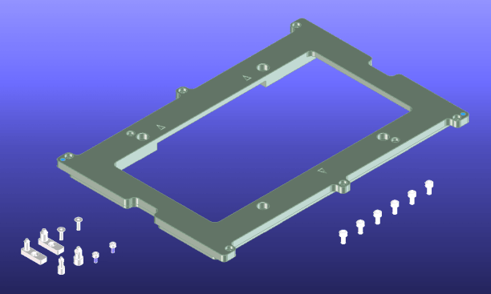

Stiffener inlay plate E6980DC
The E6980DC inlay plate supports all Delta handlers. In addition, it supports the Multitest 9510, Tesec 9588 and the Seiko-Epson TR55. Inlay plate E6980DC has four mounting holes for M5 screws and includes guide pins for the DeltaFlex and Delta Castle handlers.

Functional changes
- Introduced before SmarTest 6.3.2